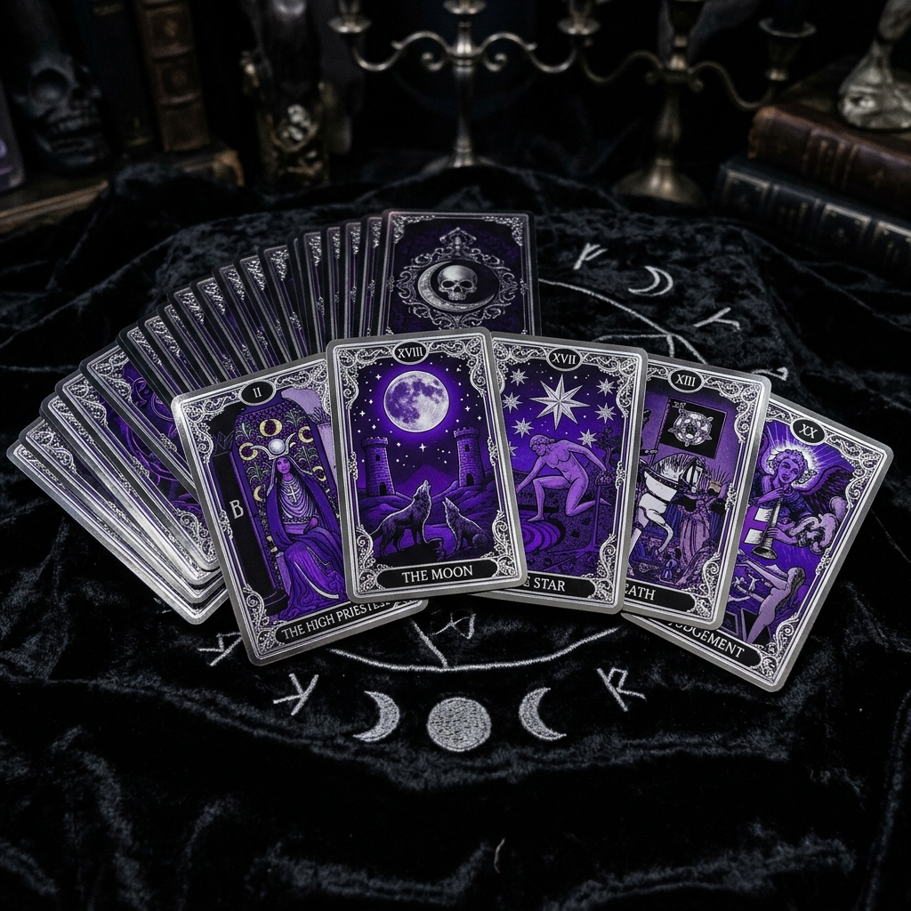

Glosario Esotérico
Un atlas de los símbolos que la humanidad ha creado para navegar lo invisible. Cada signo es una tecnología del alma Los rituales y símbolos funcionan como "tecnologías blandas" de regulación emocional. La neurociencia confirma que los actos simbólicos activan circuitos de recompensa y reducen la ansiedad. que conecta lo cotidiano con lo trascendente.
30 símbolos en 8 categorías
